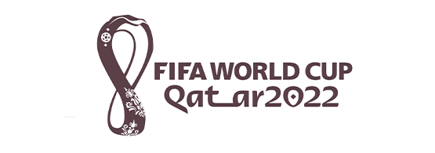

"Hello! Sharing world"
WORLD CHAMPIONS
FIFA CONFERENCE
In a momentous gathering that transcended borders and united footballing legacies, the FIFA Conference of Previous World Champions unfolded as an unprecedented celebration of the sport's rich history. Esteemed representatives from renowned nations, each a past victor in the hallowed FIFA World Cup, convened to exchange insights and commemorate their indelible contributions to the beautiful game. Eager to share their triumphs and challenges, the revered footballing icons engaged in spirited discussions, fostering a collective spirit of camaraderie and respect.
As the echoes of past glories reverberated through the conference halls, a powerful message of unity emerged, transcending rivalries and underlining the profound impact of football on global culture. The conference served as a timeless reminder of the enduring allure of the World Cup and its ability to forge connections that span generations.
Please contact us per Email for nay further questions about this FIFA Conference
thefifagathering@soccer.org
FIFA conference
2022 Qatar logo
The logo of CC Global Summit 2015 was decided through the logo competition from 8, June to 7, July.
The logo of CC Global Summit 2015 was decided through the logo competition from 8, June to 7, July. After online public voting and Selection Committee’s judging process, the logo from Naresh Agrawal won the prize. After consultation with Mr. Agrawal, we optimized the prize-winning-logo for this year’s summit as follows:
See the past FIFA conferences
Take a look at the past two FIFA conferencess which took place in Buenos Aires and in Volgograd